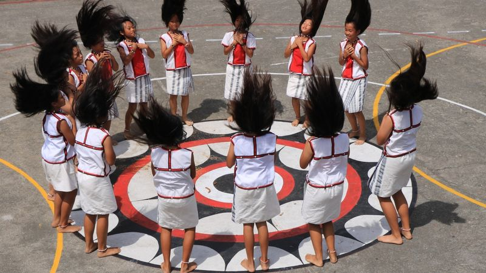

達悟族頭髮舞
生活在陽光和海風滋潤的蘭嶼島上，蘭嶼女性通常擁有健康強壯的體格，以及一頭美麗的黑髮，像瀑布一樣柔順亮麗。當她們跳舞時，髮絲隨著旋律擺動，美麗清新，宛如海浪層層疊疊，呈現出引人注目的優雅韻律。
不同於一般原住民歌舞，蘭嶼的頭髮舞伴隨著吟唱，通常不使用樂器伴奏。一些歌謠已傳承多年，但其中的含義可能已經失傳，僅存音樂和歌聲。當談到三五人並肩跳舞的頭髮舞時，最經典的形式是代表"船之眼"的雙圓圈隊形。"船之眼" 由紅、白、黑三種顏色的圖案組成，中間的線條宛如光芒四射，當它被刻在拼板舟的船身上，具有驅邪、保平安和指引方向的特殊意義。它不僅是蘭嶼文化的象徵，也體現了民族的凝聚力。此外，還有其他形式的隊形，如模擬"波浪"的雙排隊形、表達慶典和祝賀的四方排隊形，以及結合當地信仰的十字隊形，都賦予舞蹈生命的意義。这些形式也蘊含著祈禱家人平安和豐收的祝願，為舞蹈注入了更多的情感和意義。
由此可見，頭髮舞並不純粹是一種娛樂性質舞蹈，更蘊含了一種細緻的文化情思，進而成為今日重要慶典必備的特色演出。